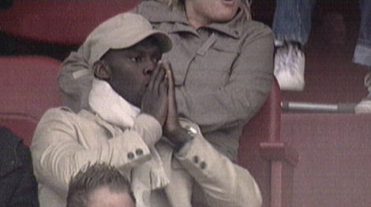

|
FC
Utrecht - Roda JC (0-0( 9 mei 2007
|
Een groot doek met een strijdlustige tekst en foto's van oude clubvedetten zeilt
over de tribunes van het halflege stadion.
Een voorzet van Caluwé belandt via Boussabon bij Somers die in de armen van
Kujovic schiet.

De voor deze wedstrijd geschorste Kah schrikt er van.

Na goed voorbereidend werk van Bodor die de bal bij Ramzi brengt volgt een pass
op Sibum die een meter naast schiet. Er volgen nog een aantal redelijke kansen
voor Ramzi van Roda en van invaller
Nelisse van FC Utrecht maar er wordt niet gescoord.
Meeuwis stuurt Oper diep die getuige dit beeld, onterecht buitenspel wordt
gefloten.
De verontwaardigde Andres Oper.
Veel meegereisde Rodasupporters (500).
foto:
fcutrechtnieuwegein.nl
© Koempels Pleasure Dome
|